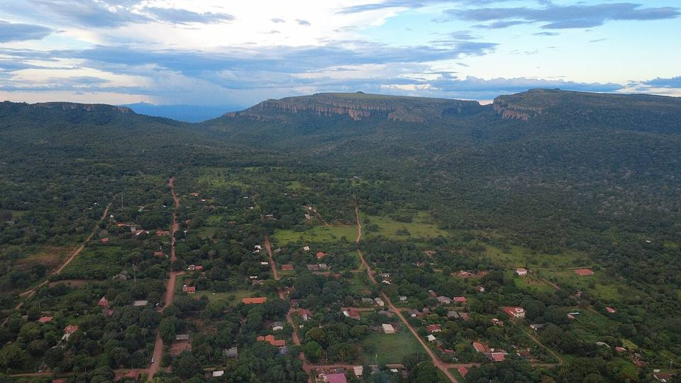

Santiago de Chiquitos
Département de Santa Cruz · Nature et randonnée

Santiago de Chiquitos est un ancien village de mission perché sur un plateau, avec des maisons basses autour d'une grande place herbeuse. On y part en randonnée vers des miradors à couper le souffle sur la vallée de Tucavaca, des grottes aux peintures rupestres et des arches de pierre. Le village est plus frais que la plaine, et vraiment hors du temps.
650 maltitude
1 à 2 jourssur place
À faire
- Mirador del Valle de Tucavaca au coucher du soleil
- Cueva de Juan Miserandino et peintures rupestres
- Arco de Piedra et cascades
- Église de mission
À goûter
- Cuñapé et pan de arrozPetits pains au fromage et au manioc, ou au riz, servis chauds avec un café le matin.
- Locro de gallinaSoupe de riz épaisse au poulet fermier, réconfortante, typique de l'Orient.
- Fromages de ChiquitosFromages frais de vache produits dans les villages des missions, avec du pain maison.
Conseil. Plus frais que Roboré grâce à l'altitude. Guides et petits hôtels au village.
Comment aller à Santiago de Chiquitos
Roboré Route (bus, voiture) · 45 min
Taxi ou micro depuis Roboré.
Photos de Santiago de Chiquitos


Autres lieux de la région
 Chochís et la Torre de DavidUne immense falaise rouge, la Torre de David, avec un sanctuaire à ses pieds et des cascades dans la vallée de Tucavaca.
Chochís et la Torre de DavidUne immense falaise rouge, la Torre de David, avec un sanctuaire à ses pieds et des cascades dans la vallée de Tucavaca. RoboréPetite ville tranquille de la Chiquitanía, base pour Santiago de Chiquitos, Chochís et Aguas Calientes.
RoboréPetite ville tranquille de la Chiquitanía, base pour Santiago de Chiquitos, Chochís et Aguas Calientes. Aguas Calientes (rivière chaude)Une rivière d'eau chaude naturelle (autour de 38 °C) au milieu de la forêt : on s'y baigne avec les petits poissons.
Aguas Calientes (rivière chaude)Une rivière d'eau chaude naturelle (autour de 38 °C) au milieu de la forêt : on s'y baigne avec les petits poissons.